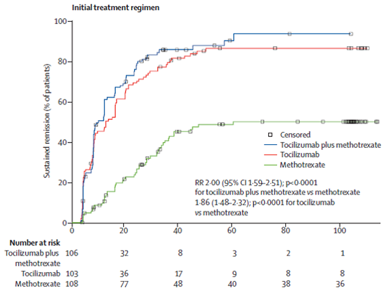
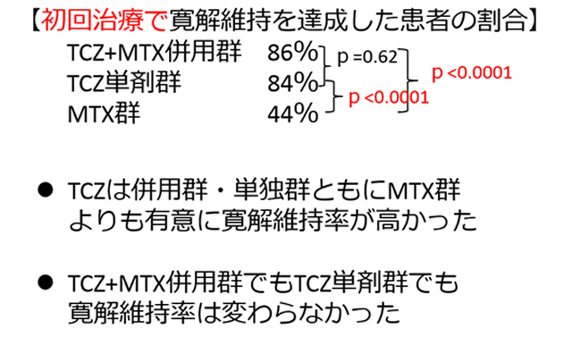

DMARDs未治療RA患者への高い寛解維持率が確認された(U-Act-Early)
- ●LANCET掲載のオランダで行われた2年間の多施設共同無作為化ランダム試験。
- ●DMARDs治療歴のない早期RA患者317名をTCZ+MTX併用群、TCZ単剤群、MTX群に割付。
- ●主要評価項目は寛解維持を達成した患者の割合（少なくとも24週間DAS28<2.6かつSJC≦4）。


U-ACT-Earlyが世界で注目されているのは、早期RAへのTCZ治療で90％近く寛解を達成したという事実である